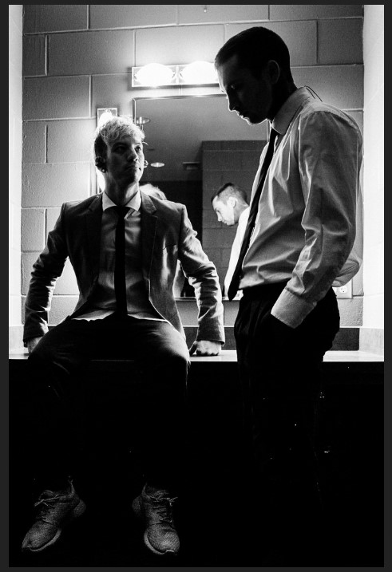

Twenty One Pilots

Twenty One Pilots es un dúo musical estadounidense de Columbus, Ohio. La banda se formó en 2009.
Integrantes
Tyler Joseph (Vocal - Piano - Bajo)
Josh Dun (Batería)
Algunos Álbumes
Nombre
Año
Twenty One Pilots
2009
Regional at Best
2011
Vessel
2013
Blurryface
2015
Trench
2018
Sitio web oficial
Atrás